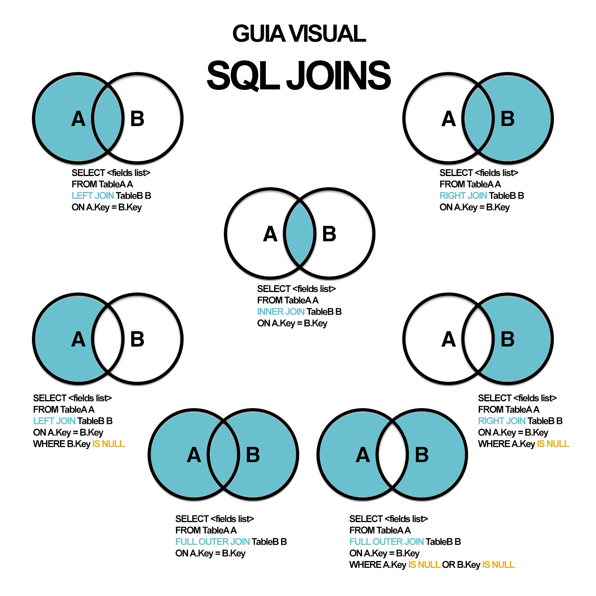

SQL 2 - Otra alternativa para hacer los JOINS entre tablas.
label Introducción
Las vinculaciones entre tablas también pueden se realizan mediante la cláusula
INNER que combina registros de dos tablas siempre que haya concordancia de valores en un campo común. Su sintaxis es:
SELECT campos FROM tb1 INNER JOIN tb2 ON
tb1.campo1 comp tb2.campo2
label_outline En donde:
| tb1, tb2 | Son los nombres de las tablas desde las que se combinan los registros. |
| campo1, campo2 | Son los nombres de los campos que se combinan. Si los campos no son numéricos, los campos deben ser del mismo tipo de dato, pero no tienen que tener el mismo nombre. |
| comp | Es cualquier operador de comparación relacional: =, <,<>, <=, =>, ó >. |
Se puede utilizar una operación INNER JOIN en cualquier cláusula FROM. Esto crea una combinación por equivalencia, conocida también como unión interna. Las combinaciones equivalentes son las más comunes; éstas combinan los registros de dos tablas siempre que haya concordancia de valores en un campo común a ambas tablas. Se puede utilizar INNER JOIN con las tablas Departamentos y Empleados para seleccionar todos los empleados de cada departamento. Por el contrario, para seleccionar todos los departamentos (incluso si alguno de ellos no tiene ningún empleado asignado) se emplea LEFT JOIN o todos los empleados (incluso si alguno no está asignado a ningún departamento), en este caso RIGHT JOIN.
Si se intenta combinar campos que contengan datos Memo u Objeto OLE, se produce un error. Se pueden combinar dos campos numéricos cualesquiera, incluso si son de diferente tipo de dato.
label_outline El ejemplo siguiente muestra cómo podría combinar las tablas Categorías y Productos basándose en el campo IDCategoria:
Ejemplo 1:
SELECT NombreCategoria, NombreProducto
FROM Categorias INNER JOIN Productos
ON Categorias.IDCategoria = Productos.IDCategoria
En el ejemplo anterior, IDCategoria es el campo combinado, pero no está incluido en la salida de la consulta ya que no está incluido en la instrucción SELECT. Para incluir el campo combinado, incluir el nombre del campo en la instrucción SELECT, en este caso, Categorias.IDCategoria.
label_outline También se pueden enlazar varias cláusulas ON en una instrucción JOIN, utilizando la sintaxis siguiente:
Ejemplo 2:
SELECT campos FROM tabla1 INNER JOIN tabla2
ON (tb1.campo1 comp tb2.campo1 AND ON tb1.campo2 comp tb2.campo2)
OR ON (tb1.campo3 comp tb2.campo3)
label_outline Además se puede anidar instrucciones JOIN utilizando la siguiente sintaxis:
Ejemplo 3:
SELECT campos FROM tb1 INNER JOIN (tb2 INNER JOIN [( ]tb3
[INNER JOIN [( ]tablax [INNER JOIN ...)]
ON tb3.campo3 comp tbx.campox)]
ON tb2.campo2 comp tb3.campo3)
ON tb1.campo1 comp tb2.campo2
Un LEFT JOIN o un RIGHT JOIN puede anidarse dentro de un INNER JOIN, pero un INNER JOIN no puede anidarse dentro de un LEFT JOIN o un RIGHT JOIN.
Ejemplo 4:
SELECT DISTINCT Sum(PrecioUnitario * Cantidad) AS Sales, (Nombre + ' ' + Apellido) AS Name
FROM Empleados
INNER JOIN(
Pedidos
INNER JOIN DetallesPedidos ON
Pedidos.IdPedido = DetallesPedidos.IdPedido)
ON
Empleados.IdEmpleado = Pedidos.IdEmpleado
GROUP BY
Nombre + ' ' + Apellido
(Crea dos combinaciones equivalentes: una entre las tablas Detalles de pedidos y Pedidos, y la otra entre las tablas Pedidos y Empleados. Esto es necesario ya que la tabla Empleados no contiene datos de ventas y la tabla Detalles de pedidos no contiene datos de los empleados. La consulta produce una lista de empleados y sus ventas totales.)
Si empleamos la cláusula INNER en la consulta se seleccionarán sólo aquellos registros de la tabla de la que hayamos escrito a la izquierda de INNER JOIN que contengan al menos un registro de la tabla que hayamos escrito a la derecha. Para solucionar esto tenemos dos cláusulas que sustituyen a la palabra clave INNER, estas cláusulas son LEFT y RIGHT. LEFT toma todos los registros de la tabla de la izquierda aunque no tengan ningún registro en la tabla de la izquierda. RIGHT realiza la misma operación pero al contrario, toma todos los registros de la tabla de la derecha aunque no tenga ningún registro en la tabla de la izquierda.
La sintaxis expuesta anteriormente pertenece a ACCESS, en donde todas las sentencias con la sintaxis funcionan correctamente. Los manuales de SQL-SERVER dicen que esta sintaxis es incorrecta y que hay que añadir la palabra reservada OUTER: LEFT OUTER JOIN y RIGHT OUTER JOIN. En la práctica funciona correctamente de una u otra forma.
label No obstante, los INNER JOIN en ORACLE no es capaz de interpretarlos, pero existe una sintaxis en formato ANSI para los INNER JOIN que funcionan en todos los sistemas. Tomando como referencia la siguiente sentencia:
SELECT
Facturas.*,
Albaranes.*
FROM
Facturas
INNER JOIN
Albaranes
ON
Facturas.IdAlbaran = Albaranes.IdAlbaran
WHERE
Facturas.IdCliente = 325
label_outline La transformación de esta sentencia a formato ANSI sería la siguiente:
SELECT
Facturas.*,
Albaranes.*
FROM
Facturas, Albaranes
WHERE
Facturas.IdAlbaran = Albaranes.IdAlbaran
AND
Facturas.IdCliente = 325
Como se puede observar los cambios realizados han sido los siguientes:
- Todas las tablas que intervienen en la consulta se especifican en la cláusula FROM.
- Las condiciones que vinculan a las tablas se especifican en la cláusula WHERE y se vinculan mediante el operador lógico AND.
label_outline Referente a los OUTER JOIN, no funcionan en ORACLE y además conozco una sintaxis que funcione en los tres sistemas. La sintaxis en ORACLE es igual a la sentencia anterior pero añadiendo los caracteres (+) detrás del nombre de la tabla en la que deseamos aceptar valores nulos, esto equivale a un LEFT JOIN:
SELECT
Facturas.*,
Albaranes.*
FROM
Facturas, Albaranes
WHERE
Facturas.IdAlbaran = Albaranes.IdAlbaran (+)
AND
Facturas.IdCliente = 325
Y esto a un RIGHT JOIN:
SELECT
Facturas.*,
Albaranes.*
FROM
Facturas, Albaranes
WHERE
Facturas.IdAlbaran (+) = Albaranes.IdAlbaran
AND
Facturas.IdCliente = 325
En SQL-SERVER se puede utilizar una sintaxis parecida, en este caso no se utiliza los caracteres (+) sino los caracteres =* para el LEFT JOIN y *= para el RIGHT JOIN.

label Consultas de Autocombinación
La autocombinación se utiliza para unir una tabla consigo misma, comparando valores de dos columnas con el mismo tipo de datos. La sintaxis en la siguiente:
SELECT
alias1.columna, alias2.columna, ...
FROM
tabla1 as alias1, tabla2 as alias2
WHERE
alias1.columna = alias2.columna
AND
otras condiciones
Por ejemplo, para visualizar el número, nombre y puesto de cada empleado, junto con el número, nombre y puesto del supervisor de cada uno de ellos se utilizaría la siguiente sentencia:
SELECT
t.num_emp, t.nombre, t.puesto, t.num_sup,s.nombre, s.puesto
FROM
empleados AS t, empleados AS s
WHERE
t.num_sup = s.num_emp
label_outline Consultas de Combinaciones no Comunes
La mayoría de las combinaciones están basadas en la igualdad de valores de las columnas que son el criterio de la combinación. Las no comunes se basan en otros operadores de combinación, tales como NOT, BETWEEN, <>, etc.
Por ejemplo, para listar el grado salarial, nombre, salario y puesto de cada empleado ordenando el resultado por grado y salario habría que ejecutar la siguiente sentencia:
SELECT
grados.grado,empleados.nombre, empleados.salario, empleados.puesto
FROM
empleados, grados
WHERE
empleados.salario BETWEEN grados.salarioinferior And grados.salariosuperior
ORDER BY
grados.grado, empleados.salario
Para listar el salario medio dentro de cada grado salarial habría que lanzar esta otra sentencia:
SELECT
grados.grado, AVG(empleados.salario)
FROM
empleados, grados
WHERE
empleados.salario BETWEEN grados.salarioinferior And grados.salariosuperior
GROUP BY
grados.grado
label_outline CROSS JOIN (SQL-SERVER)
Se utiliza en SQL-SERVER para realizar consultas de unión. Supongamos que tenemos una tabla con todos los autores y otra con todos los libros. Si deseáramos obtener un listado combinar ambas tablas de tal forma que cada autor apareciera junto a cada título, utilizaríamos la siguiente sintaxis:
SELECT
Autores.Nombre, Libros.Titulo FROM
Autores CROSS JOIN Libros
label_outline SELF JOIN
SELF JOIN es una técnica empleada para conseguir el producto cartesiano de una tabla consigo misma. Su utilización no es muy frecuente, pero pongamos algún ejemplo de su utilización.
Supongamos la siguiente tabla (El campo autor es numérico, aunque para ilustrar el ejemplo utilice el nombre):
| Autores | |
| Código (Código del libro) | Autor (Nombre del Autor) |
| B0012 | 1. Francisco López |
| B0012 | 2. Javier Alonso |
| B0012 | 3. Marta Rebolledo |
| C0014 | 1. Francisco López |
| C0014 | 2. Javier Alonso |
| D0120 | 2. Javier Alonso |
| D0120 | 3. Marta Rebolledo |
Queremos obtener, para cada libro, parejas de autores:
SELECT
A.Codigo, A.Autor, B.Autor
FROM
Autores A, Autores B
WHERE
A.Codigo = B.Codigo
El resultado es el siguiente:
| Código | Autor | Autor |
| B0012 | 1. Francisco López | 1. Francisco López |
| B0012 | 1. Francisco López | 2. Javier Alonso |
| B0012 | 1. Francisco López | 3. Marta Rebolledo |
| B0012 | 2. Javier Alonso | 2. Javier Alonso |
| B0012 | 2. Javier Alonso | 1. Francisco López |
| B0012 | 2. Javier Alonso | 3. Marta Rebolledo |
| B0012 | 3. Marta Rebolledo | 3. Marta Rebolledo |
| B0012 | 3. Marta Rebolledo | 2. Javier Alonso |
| B0012 | 3. Marta Rebolledo | 1. Francisco López |
| C0014 | 1. Francisco López | 1. Francisco López |
| C0014 | 1. Francisco López | 2. Javier Alonso |
| C0014 | 2. Javier Alonso | 2. Javier Alonso |
| C0014 | 2. Javier Alonso | 1. Francisco López |
| D0120 | 2. Javier Alonso | 2. Javier Alonso |
| D0120 | 2. Javier Alonso | 3. Marta Rebolledo |
| D0120 | 3. Marta Rebolledo | 3. Marta Rebolledo |
| D0120 | 3. Marta Rebolledo | 2. Javier Alonso |
Como podemos observar, las parejas de autores se repiten en cada uno de los libros, podemos omitir estas repeticiones de la siguiente forma
SELECT
A.Codigo, A.Autor, B.Autor
FROM
Autores A, Autores B
WHERE
A.Codigo = B.Codigo AND A.Autor < B.Autor
El resultado ahora es el siguiente:
| Código | Autor | Autor |
| B0012 | 1. Francisco López | 2. Javier Alonso |
| B0012 | 1. Francisco López | 3. Marta Rebolledo |
| C0014 | 1. Francisco López | 2. Javier Alonso |
| D0120 | 2. Javier Alonso | 3. Marta Rebolledo |
Ahora tenemos un conjunto de resultados en formato Autor - CoAutor.
Si en la tabla de empleados quisiéramos extraer todas las posibles parejas que podemos realizar, utilizaríamos la siguiente sentencia:
SELECT
Hombres.Nombre, Mujeres.Nombre
FROM
Empleados Hombre, Empleados Mujeres
WHERE
Hombre.Sexo = 'Hombre' AND
Mujeres.Sexo = 'Mujer' AND
Hombres.Id <>Mujeres.Id
Para concluir supongamos la tabla siguiente:
| Empleados | ||
| Id | Nombre | SuJefe |
| 1 | Marcos | 6 |
| 2 | Lucas | 1 |
| 3 | Ana | 2 |
| 4 | Eva | 1 |
| 5 | Juan | 6 |
| 6 | Antonio | |
Queremos obtener un conjunto de resultados con el nombre del empleado y el nombre de su jefe:
SELECT
Emple.Nombre, Jefes.Nombre
FROM
Empleados Emple, Empleados Jefe
WHERE